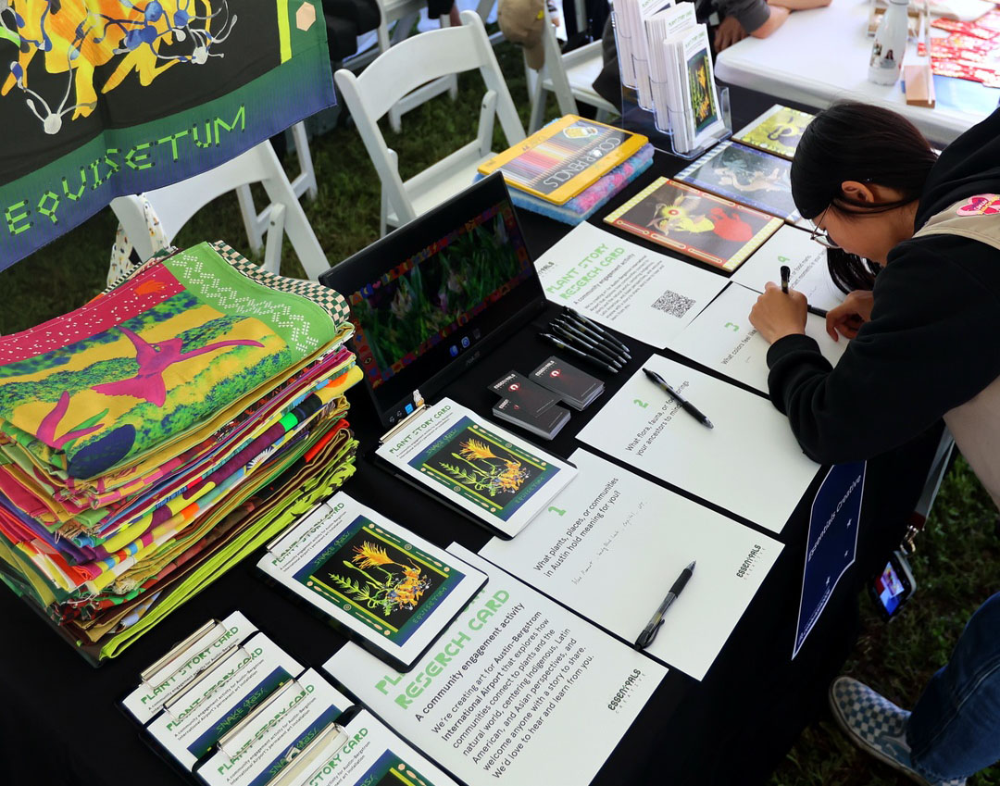
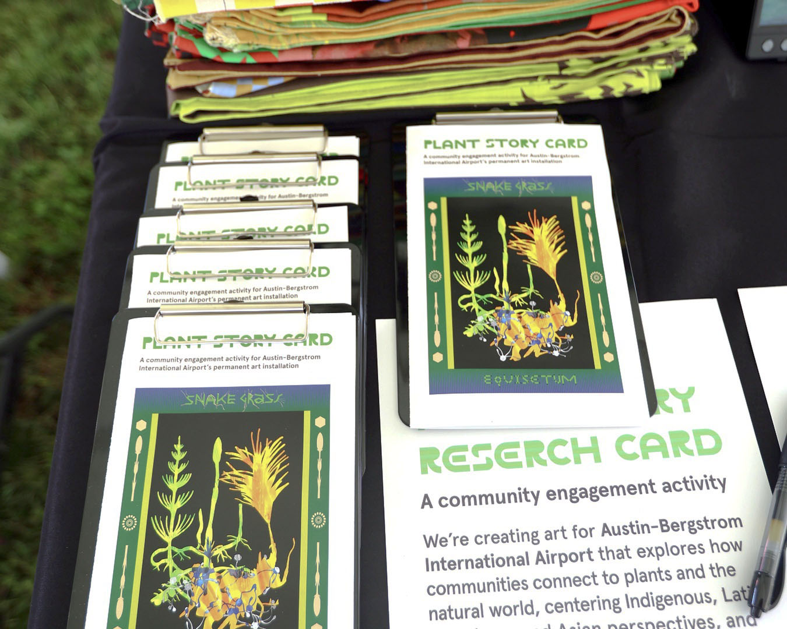
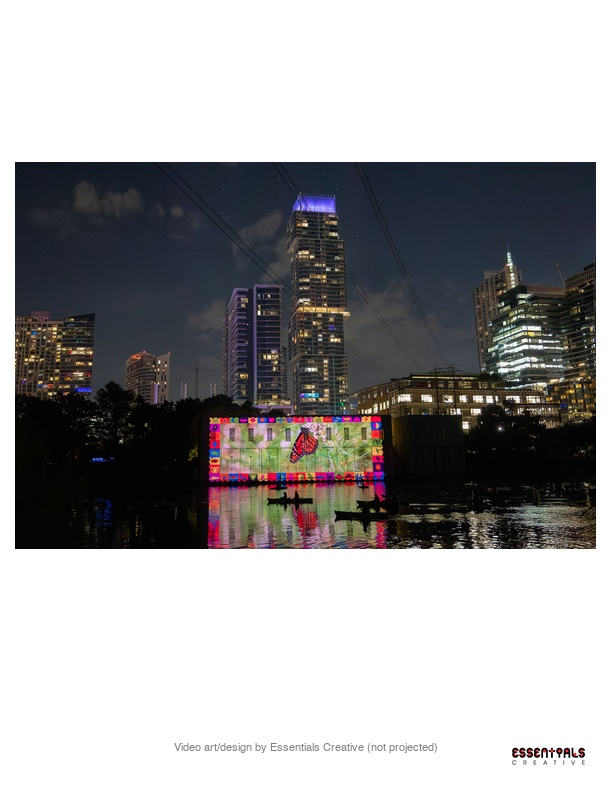
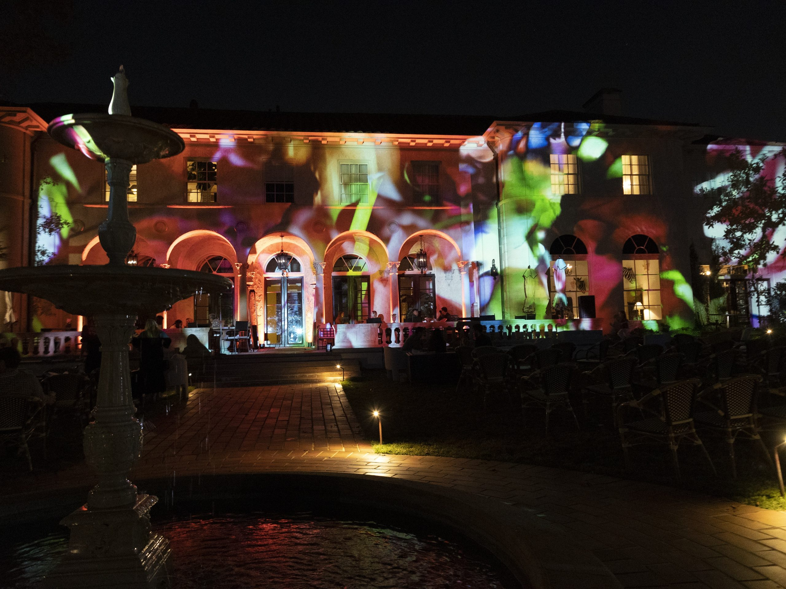
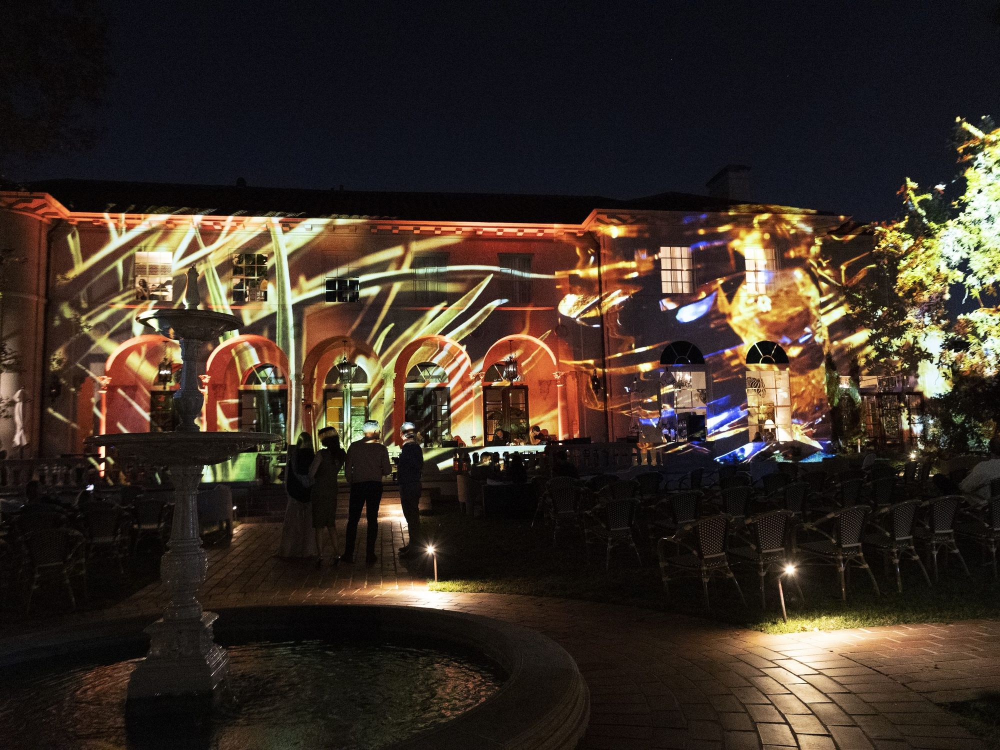

Essentials Creative · a reciprocity installation
Give
Back
Land Back. Water Back. Data Back. Three literal cycles of return — soil, water, and data, each given and given back.

Essentials Creative · a reciprocity installation
Land Back. Water Back. Data Back. Three literal cycles of return — soil, water, and data, each given and given back.


Movement one
Press the soil into a living bed. A small, bodily act of return to the ground — leaving a mark the next visitor builds on.


Movement two
Pour your water into the reeds. It moves through a living phytoremediation loop and comes back measurably clearer. Real ecology — not a video of cleaning.

Movement three · the core test
Give a word; watch it join a projection field. Then choose: Take it · Hear it · Gift it · Erase it. Here, deletion is the norm. Retention is the exception you choose.

The loop the threshold opened closes. You gave first; the room gave back.